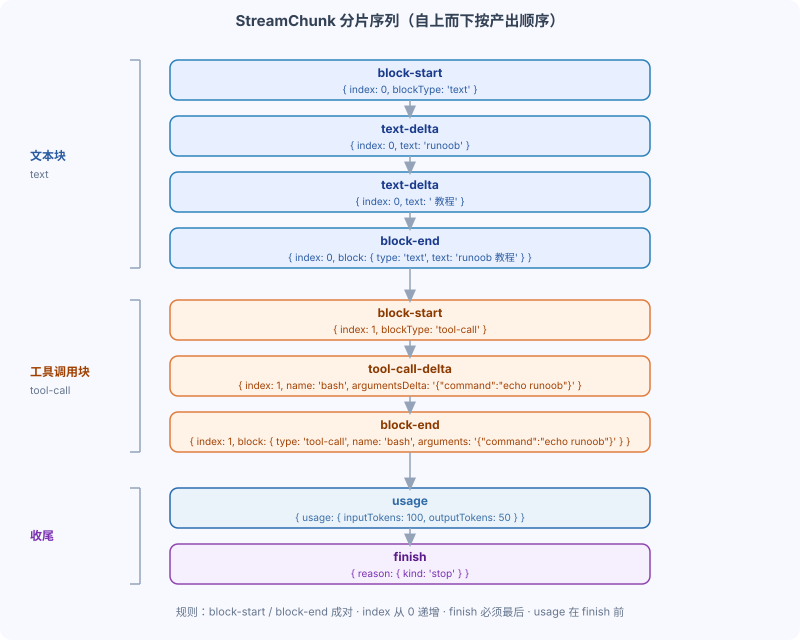

DeepSeek Harness StreamChunk Protocol and Error Handling
What kind of data does the adapter's stream() actually output?
The answer is StreamChunk, a strictly ordered chunking protocol.
This covers chunk sequences, key rules, and how to handle transmission errors.
StreamChunk Protocol
StreamChunk is the streaming protocol between the Harness and the adapter.
A content block starts with block-start, uses delta for incremental transmission in the middle, and ends with block-end.
Text and tool calls are two different types of content blocks, each going through start / delta / end.
When all chunks are winding down, first send usage to report token usage, then send finish to declare the end reason.

The diagram above, top to bottom, shows a complete chunk sequence.
First a text block: block-start → text-delta × 2 → block-end.
Then a tool call block: block-start → tool-call-delta → block-end.
Finally, usage and finish.
A finish reason of stop indicates normal completion, while tool-calls indicates a request to execute tools.
Complete shard sequence
The official documentation provides exampleChunks, which produces all chunks from a single generation in order.
text-delta can be split into multiple chunks, incrementally concatenated into the full text.
tool-call-delta's argumentsDelta is the incremental delta of the raw JSON text.
Example
import { CallId, type StreamChunk } from '@deepseek-ai/dsh-llm'
async function* exampleChunks(): AsyncIterable<StreamChunk> {
// 1. Start each content block with block-start.
// Start a text block, index is 0
yield { type: 'block-start', index: 0, blockType: 'text' }
// 2. Stream text through text-delta.
// Text delta, can be split into multiple fragments
yield { type: 'text-delta', index: 0, text: 'runoob' }
yield { type: 'text-delta', index: 0, text: ' tutorial' }
// 3. End each content block with block-end and the complete block.
// End with a complete block, index matches block-start
yield {
type: 'block-end',
index: 0,
block: { type: 'text', text: 'runoob tutorial' },
}
// 4. Tool-call block.
// Start a tool call block, index is 1
yield { type: 'block-start', index: 1, blockType: 'tool-call' }
// Tool name and argument delta, id generated by CallId factory
yield {
type: 'tool-call-delta',
index: 1,
id: CallId('call-123'),
name: 'bash',
argumentsDelta: '{"command":"echo runoob"}',
}
// End with a complete block, arguments is assembled JSON text
yield {
type: 'block-end',
index: 1,
block: {
type: 'tool-call',
id: CallId('call-123'),
name: 'bash',
arguments: '{"command":"echo runoob"}',
},
}
// 5. Token usage.
// Report token usage, must be before finish.
yield { type: 'usage', usage: { inputTokens: 100, outputTokens: 50 } }
// 6. Finish reason.
// Last chunk, declare the reason for ending.
yield { type: 'finish', reason: { kind: 'stop' } }
// Alternatively, { kind: 'tool-calls' } requests tool execution.
}
CallId is a factory function built into the protocol, used to generate tool call ids.
argumentsDelta can be fully generated in a single chunk, or incrementally generated across multiple chunks.
Key rules
The protocol has five hard rules; violating any one of them will cause the consumer to fail parsing.
| Rules | Description |
|---|---|
| block-start and block-end are paired. | Every block-start must have a corresponding block-end. |
| The index increments from 0. | Used to identify the order of content blocks. |
| argumentsDelta is the raw JSON delta. | Can be fully generated in one chunk, or generated across multiple chunks |
| finish must be the last chunk | No further shards are allowed after this. |
| usage must come before finish. | Report token usage first, then declare the end |
Both text-delta and tool-call-delta must carry the index of their owning block, and content blocks must not be interleaved with each other.
Error handling: express failures with LlmError
The adapter should throw transmission and protocol failures via LlmError with a stable code.
The agent-loop preserves the error and its code for diagnostics and policy handling.
Do not rely on a plain Error being automatically converted.
A stable code lets the upper layer precisely match error types instead of parsing error strings.
Every provider HTTP request must also merge attributionHeaders().
Also pass options.signal to fetch so that cancellation and resource release come to a full stop.
Example
import {
attributionHeaders,
LlmAdapter,
LlmError,
type GenerateOptions,
type StreamChunk,
} from '@deepseek-ai/dsh-llm'
class HttpAdapter extends LlmAdapter {
// Constructor injects endpoint address
constructor(private readonly endpoint: string) {
super()
}
async *stream(options: GenerateOptions): AsyncIterable<StreamChunk> {
// Initiate HTTP request, merge attribution headers, pass abort signal.
const response = await fetch(this.endpoint, {
method: 'POST',
headers: {
'content-type': 'application/json',
...attributionHeaders(),
},
body: JSON.stringify({ model: options.model, messages: options.messages }),
// When the caller requests cancellation, fetch will immediately abort
...options.signal ? { signal: options.signal } : {},
})
if (!response.ok) {
// Use LlmError with a stable code to express transport failure
throw new LlmError(`Provider API error: ${response.status}`, 'PROVIDER_HTTP_ERROR')
}
// A real adapter parses the response and emits the complete chunk sequence.
// The real adapter parses the response body here, producing the complete chunk sequence.
yield { type: 'finish', reason: { kind: 'stop' } }
}
}
attributionHeaders() merges attribution information into the request headers.
When options.signal exists, pass it as the signal to fetch, and stop immediately when the request is canceled.
When response.ok is false, throw LlmError with code PROVIDER_HTTP_ERROR.
The skeleton only yields a finish; a real adapter would parse the response body here.
The first argument of LlmError is the message, and the second argument is the stable code.
The upper layer makes policy decisions based on the code, so once a code is published, don't change it.
Fields that cannot be silently dropped.
If GenerateOptions contains fields the adapter cannot support, also throw LlmError; don't silently drop them.
Reasoning metadata includes an ordered opaque ID, a display name, and optional configuration defaults.
Please preserve the authoritative optional list given by the adapter, including the off values returned by its upstream capability API.
Don't elevate optional reasoning intensity to a core enum, or the adapter will lose upstream flexibility.
The service will validate the aggregated result and reject explicitly specified but unsupported reasoning strengths before calling stream().
Omitting reasoning means the model has no optional reasoning intensity capability.
Summary and self-test
One-sentence summary: The StreamChunk protocol uses paired blocks to describe content, wraps up with usage and finish; on failure, it expresses with LlmError carrying a stable code.
Self-test question 1: What is the minimum set of chunks a text block needs?
Self-test question 2: What is the order of usage and finish?
Self-test question 3: When a request fails, why use LlmError with a code instead of a plain Error?
other extensions